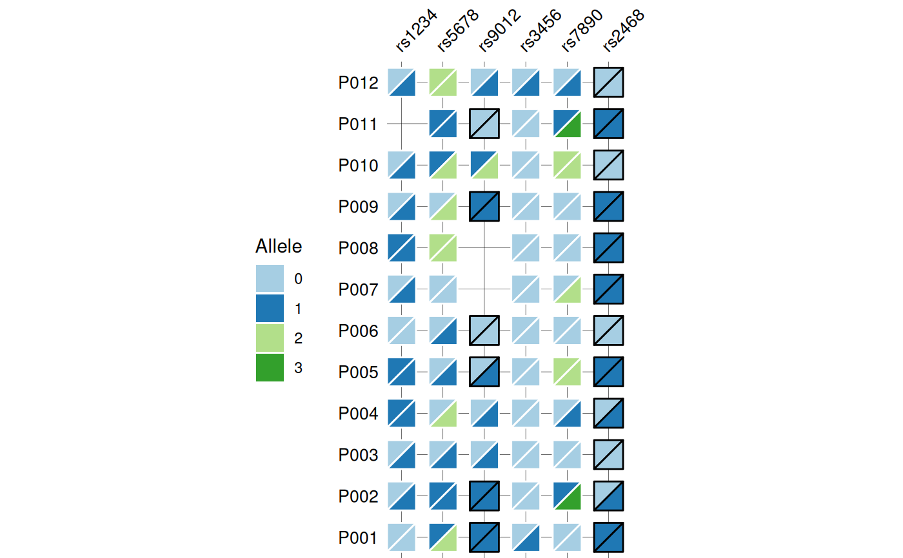
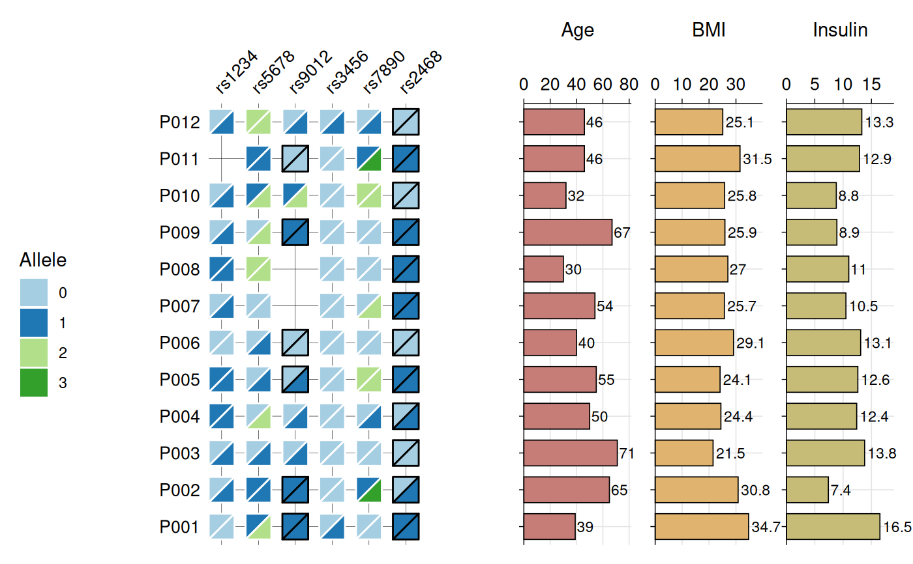

Creates a heatmap visualization of biallelic genotypes (e.g., SNPs, variants) with split-tile representation showing phased or unphased alleles. Each tile is divided diagonally to display both alleles, with border color indicating phasing status (black for phased, white for unphased). Optional barplots can be added to display associated numeric data.
Usage
gg_geno(
data,
id = "id",
geno = "_geno",
bar_column = NULL,
bar_fill = NULL,
panel_ratio = 0.3,
tile_fill = NULL,
tile_width = 0.7,
tile_height = 0.7,
border_width = 0.5,
text_size = 10,
show_legend = TRUE,
quiet = FALSE
)Arguments
- data
A data frame containing the data to visualize.
- id
Character string specifying the column name in
datathat contains sample identifiers. Default is "id".- geno
Character string specifying the regular expression pattern that identifies genotype columns (e.g.,
"_geno$"to match columns likers123_geno,rs456_geno). The pattern is removed to create SNP labels. Default is "_geno".- bar_column
Character vector specifying column name(s) in
datato display as horizontal barplot(s) to the right of the heatmap. Columns must be numeric. Default is NULL (no barplots).- bar_fill
Character vector specifying the fill color(s) for bars. When
bar_columncontains multiple elements, colors are recycled if necessary to match the number of bars. If NULL (default), uses colors from the Brewer "Paired" palette.- panel_ratio
Numeric value specifying the total relative width of the barplot panel(s) compared to the heatmap panel (which has a reference width of 1). When multiple
bar_columnvalues are provided, this width is divided equally among them. For example,panel_ratio = 0.3creates a 1:0.3 width ratio between heatmap and barplot panels. Only used whenbar_columnis not NULL. Default is 0.3.- tile_fill
Named character vector of colors for criterion values (e.g.,
c(Pass = "green", Fail = "red")). If NULL (default), uses the Brewer "Paired" palette.- tile_width
Numeric value (0-1) specifying the width of tiles as a proportion of available space. Default is 0.7.
- tile_height
Numeric value (0-1) specifying the height of tiles as a proportion of available space. Default is 0.7.
- border_width
Numeric value specifying the width of tile borders. Default is 0.5.
- text_size
Numeric value specifying the size of axis text. Default is 8.
- show_legend
Logical indicating whether to show the fill legend. Default is TRUE.
- quiet
Logical indicating whether to suppress messages. Default is FALSE.
Value
A ggplot2 object (or patchwork object if bar_column is
specified). The plot displays:
Split tiles representing biallelic genotypes
Top-left triangle: first allele
Bottom-right triangle: second allele
Black borders: phased genotypes (separator: |)
White borders: unphased genotypes (separator: /)
Optional barplots showing numeric data for each sample
Color legend mapping alleles to colors
The returned object has an attribute "recommended_dims" containing
suggested plot width and height in inches.
Details
The function expects genotype data in wide format with:
One column for sample IDs (specified by
id)Multiple columns matching the
genopattern, each representing a SNP/variantGenotypes encoded as "allele1/allele2" (unphased) or "allele1|allele2" (phased)
Genotype format examples:
Unphased:
"0/0","0/1","1/1"Phased:
"0|0","0|1","1|0"
Each genotype tile is split diagonally with the first allele in the top-left triangle and the second allele in the bottom-right triangle. The border color indicates phasing: black borders for phased genotypes (|) and white borders for unphased genotypes (/).
When bar_column is specified, the function requires the patchwork
package to combine the heatmap with barplots. Barplots are added to the
right of the heatmap and display numeric values with text labels.
WARNING: Alignment between heatmap and barplots depends on plot dimensions.
The function provides recommended dimensions (accessible via
attr(plot, "recommended_dims")) that ensure proper alignment. You
can adjust these dimensions to improve appearance (e.g., reduce width to
tighten spacing, or scale proportionally for size) while maintaining
alignment.
Examples
# Create example SNP and phenotype data
set.seed(123)
snp_data <- data.frame(
id = paste0("P", sprintf("%03d", 1:12)),
# SNP columns
rs1234_geno = sample(c(c("0/0", "0/1", "1/1"), NA),
12, replace = TRUE,
prob = c(0.4, 0.4, 0.15, 0.05)),
rs5678_geno = sample(c("0/0", "0/1", "0/2", "1/1", "1/2", "2/2", NA),
12, replace = TRUE,
prob = c(0.25, 0.25, 0.1, 0.15, 0.15, 0.05, 0.05)),
rs9012_geno = sample(c(c("0|0", "0|1", "1|1", "0/1", "1/2"), NA),
12, replace = TRUE,
prob = c(0.2, 0.2, 0.15, 0.2, 0.15, 0.1)),
rs3456_geno = sample(c(c("0/0", "0/1", "1/1"), NA),
12, replace = TRUE,
prob = c(0.45, 0.35, 0.15, 0.05)),
rs7890_geno = sample(c("0/0", "0/1", "0/2", "1/3", "2/2", NA),
12, replace = TRUE,
prob = c(0.3, 0.25, 0.15, 0.1, 0.15, 0.05)),
rs2468_geno = sample(c("0|0", "0|1", "1|1", "1|2", NA),
12, replace = TRUE,
prob = c(0.3, 0.35, 0.2, 0.1, 0.05)),
# Phenotype columns for bar plots
Age = sample(25:75, 12, replace = TRUE),
BMI = round(rnorm(12, mean = 26, sd = 4), 1),
Insulin = round(rnorm(12, mean = 12, sd = 3), 1)
)
# Base genotype plot
gg_geno(
data = snp_data,
id = "id",
geno = "_geno$"
)
#> Recommended dimensions: 4.4 x 6.3 inches

# Show optional barplots
gg_geno(
data = snp_data,
id = "id",
geno = "_geno$",
show_legend = TRUE,
panel_ratio = 1,
bar_column = c("Age", "BMI", "Insulin"),
bar_fill = c("#c77d77", "#e0b46e", "#c7bc77"),
text_size = 10
)
#> Recommended dimensions: 10.4 x 6.3 inches
